高效能人士的七个习惯管理员操作指南
面向新管理员，说明新版运营工作台的常用页面、核心按钮和推荐操作流程。
重点补充：新版分组导航、报名信息统计、数据分析活跃度、期次复制、每日打卡庆祝配置、小凡看见反馈、实录报告、在场管理、活动、优惠券、首页配置和审计日志。
截图会根据 URL 中的 slug 加载对应租户后台；用户、订单、报告和内容明细已按需脱敏。
5分钟上手流程
- 先在右上角确认当前租户，再从左侧分组菜单进入业务页面。
- 每天先看仪表板，有异常再进入明细页。
- 复盘运营时重点看数据分析里的“活跃度”，汇总报名画像时看“报名信息统计”。
- 新建期次优先复制上一期，尤其推荐从已校验过的“秩序之锚”复制。
- 运营内容时关注每日打卡庆祝配置、小凡看见反馈、查看申请、实录报告和在场印记。
- 活动和优惠券上线前，先核对可见范围、价格、报名表单、有效期和首页展示顺序。
- 遇到删除、重置、批量审核等操作，先核对对象和影响范围。
安全提醒
不要在未确认租户、对象和影响范围的情况下点击删除、重置、批量同意/拒绝、清空报告等操作。先查询核对，再处理。
左侧菜单速查
| 区域 | 包含菜单 | 什么时候用 |
|---|---|---|
| 数据看板 | 仪表板、数据分析 | 看总体状态、趋势和用户活跃度 |
| 业务管理 | 报名管理、用户管理、支付记录、期次管理、内容管理 | 处理报名、报名画像、用户、订单、期次和课节，期次新建优先复制上一期 |
| 内容管理 | 每日打卡、小凡看见、查看申请、实录报告、在场管理、活动管理、优惠券管理、首页配置、审计日志 | 维护打卡、反馈、展示申请、报告、活动报名、优惠券、首页顺序和后台操作留痕 |
1. 仪表板
用途：用来快速判断今天后台有没有待处理事项，适合作为每天进入后台后的第一站。
操作流程
- 先看顶部总用户数、总报名数、已支付报名、支付总额和活跃期次。
- 再看“待处理事项”，确认是否有待审批、待支付或今日活跃检查。
- 需要追踪明细时，再点击“查看全部”或进入对应菜单处理。
重点：仪表板只负责发现问题，不建议在这里直接下结论。
看到异常数字时，要回到报名、支付、申请等明细页核对。
页面要点说明
- 左侧当前菜单位置。
- 顶部核心经营数字，先判断整体状态。
- 待处理事项和最近列表入口，用来跳转追踪明细。
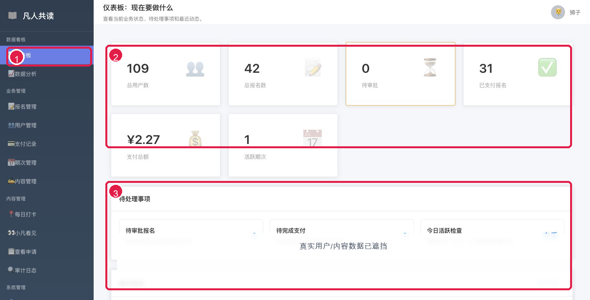
本节对应当前版本后台界面；部分真实数据已遮挡。
2. 数据分析
用途：用来复盘过去一段时间的报名、支付和用户活跃情况，其中“活跃度”页是判断用户有没有真正使用小程序的重点。
操作流程
- 进入数据分析后，先设置日期范围并刷新。
- 切到“活跃度”页，重点看访问小程序、打卡、看自己小凡、看他人小凡、查看课程、去晨读等曲线。
- 如果某一天活跃度异常升高或降低，再去每日打卡、小凡看见或课程内容页核对原因。
重点：活跃度比单纯报名数更能反映用户是否在持续参与。
不要只看当天数字，要结合趋势线判断活动是否在变好或变差。
页面要点说明
- 数据分析入口。
- 活跃度 tab：重点查看用户行为趋势。
- 今日活跃概览卡片。
- 关键行为活跃人数趋势图。
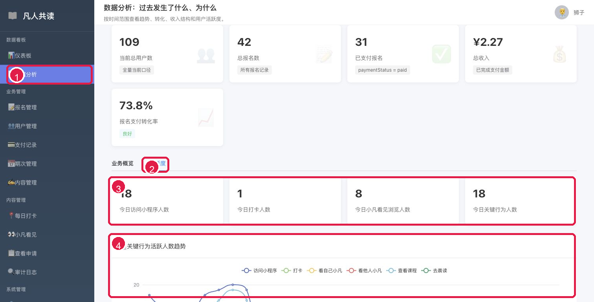
本节对应当前版本后台界面；部分真实数据已遮挡。
3. 报名管理
用途：分为“报名管理”和“报名信息统计”两页：前者查询报名记录和核对支付状态，后者按期次汇总报名画像。
3.1 报名管理
- 先确认停留在“报名管理”页签。
- 输入姓名或昵称，也可以结合支付状态、期次筛选。
- 点击“搜索”查看结果。
- 如果发现报名名称和用户昵称不一致，再使用“同步报名名称到昵称”。
重点：同步昵称会影响展示名称，执行前先确认当前租户和处理对象。
查不到记录时先清空筛选条件，再重新搜索。
页面要点
- 页签用于切换报名列表和报名信息统计。
- 筛选区支持姓名、支付状态和期次组合查询。
- 列表操作区用于查看详情或处理单条报名。
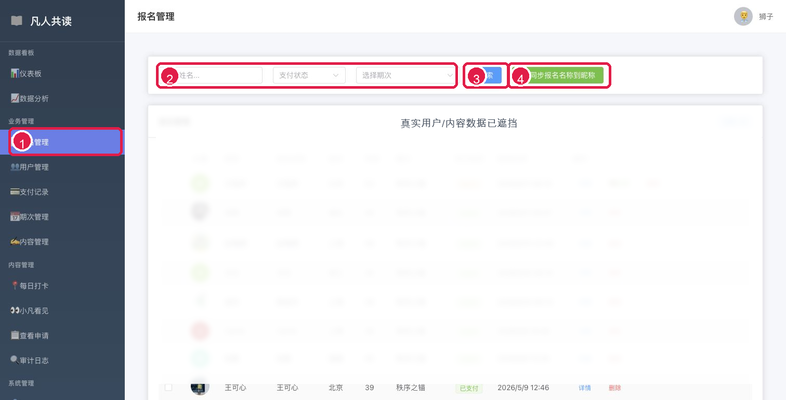
第一页：报名记录查询与管理；用户和报名明细已脱敏。
3.2 报名信息统计
- 切换到“报名信息统计”页签。
- 选择一个期次，系统会加载该期报名样本。
- 先看报名总数、已支付/免费、平均年龄和有推荐人四项概览。
- 再看性别、年龄、地区、阅读经历、承诺和支付状态分布。
- 需要理解报名动机时，查看缘起、期待的关键词与样本；需要核对个体时再看填写明细。
重点：统计结果只代表所选期次的已填写样本。切换期次后要重新确认样本数，不要把不同期次的数据混在一起解读。
页面要点
- 期次选择器决定本页全部统计口径。
- 概览卡片用于快速判断样本规模和基本画像。
- 分布面板展示分类人数和对应成员。
- 文字分析与填写明细用于进一步核对报名背景。
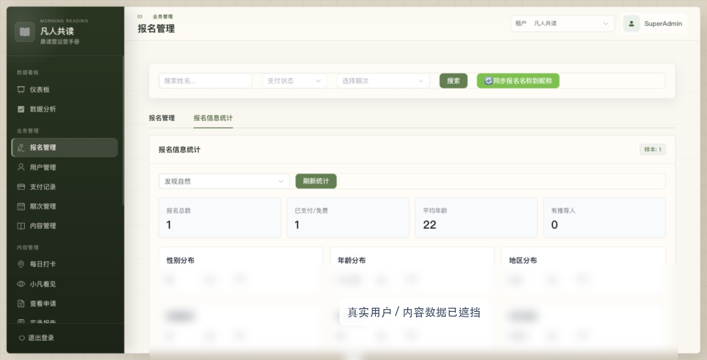
第二页：按期次查看报名画像；姓名、填写内容和明细已脱敏。
4. 用户管理
用途：用来查看用户资料、电话、状态和注册信息，主要用于定位用户。
操作流程
- 输入用户昵称、邮箱或其他关键词。
- 按状态继续筛选。
- 在列表中核对用户信息后，再决定是否进入后续处理。
重点：用户管理更适合查询和核对身份。
涉及状态变更时要先确认原因，避免误操作。
页面要点说明
- 用户管理入口。
- 搜索和筛选区。
- 用户列表，用来核对身份、状态和注册信息。
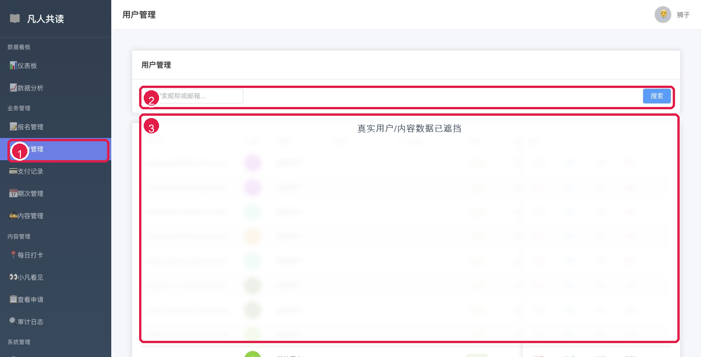
本节对应当前版本后台界面；部分真实数据已遮挡。
5. 支付记录
用途：用来查订单、金额、支付方式和支付状态，适合处理支付核对和异常排查。
操作流程
- 输入订单号或用户名，必要时按状态、支付方式筛选。
- 点击“刷新”重新加载支付记录。
- 查看总收入、已完成、处理中、失败/取消等统计。
- 单笔订单有问题时，先点“详情”核对，再考虑状态修正。
重点：“失败/取消”是支付状态统计，不是页面报错。
重置待支付、状态修正类操作必须先确认订单真实情况。
页面要点说明
- 支付记录入口。
- 筛选条件和刷新按钮。
- 支付统计卡片。
- 单笔订单操作区。
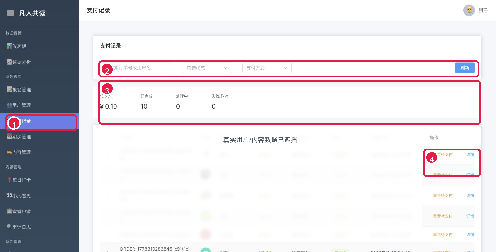
本节对应当前版本后台界面；部分真实数据已遮挡。
6. 期次管理
用途：用来创建和维护读书营期次。新建期次时，优先推荐使用“复制”上一期，而不是从零新建。
操作流程
- 进入期次管理后，找到上一期已经校验过的期次。
- 点击“复制”，打开复制期次弹窗。
- 保留已验证课程内容，只修改期次名称、标题、日期、价格、报名人数等必要字段。
- 确认文字无误后再保存。
重点：目前“秩序之锚”的内容已经校验过，后续新期次建议从这一期复制出去。
复制会同时复制该期次下的课程内容，这样能减少漏配、错配和格式问题。
不要直接删除旧期次，除非确认没有关联报名、课程、打卡数据。
页面要点说明
- 期次管理入口。
- 复制期次弹窗。
- 复制会带出上一期的基础信息。
- 这里修改新期次的日期、天数、价格等字段。
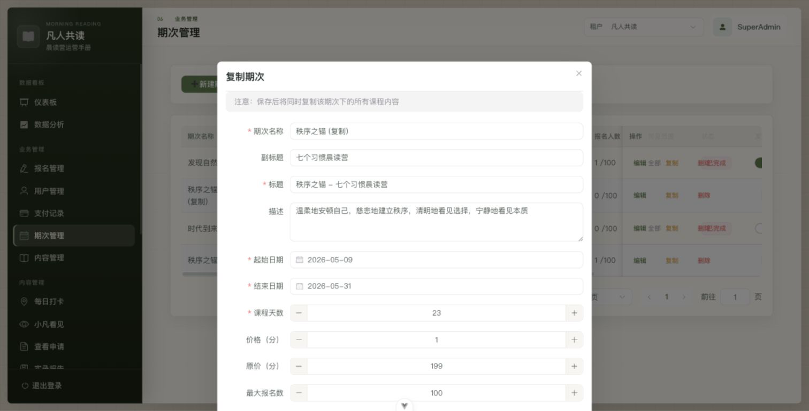
本节对应当前版本后台界面；部分真实数据已遮挡。
7. 内容管理
用途：用来维护某个期次下的课程课节，包括新增、编辑、下架和删除。
操作流程
- 先选择要管理的期次。
- 点击“新增课节”创建新内容。
- 已有课节优先使用“编辑”修正文字或配置。
- 需要临时隐藏时优先“下架”，不要直接删除。
重点：内容管理依赖期次，先选对期次再操作。
复制期次后，课程内容会一起复制，通常只需要改少量文字。
页面要点说明
- 内容管理入口。
- 期次选择器。
- 新增课节。
- 课节的编辑、下架、删除操作。
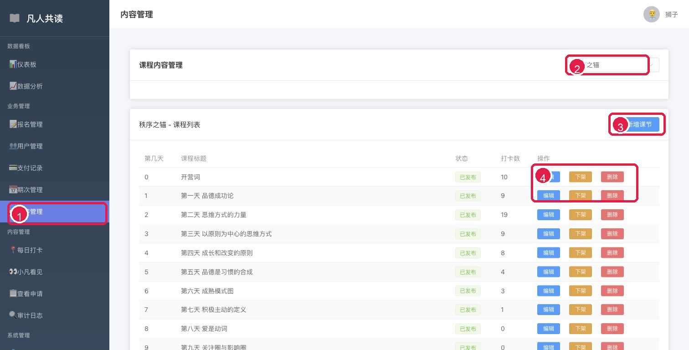
本节对应当前版本后台界面；部分真实数据已遮挡。
8. 每日打卡
用途：每日打卡分两页看：第一页处理打卡记录查询，第二页维护阅读完成后的庆祝动画。
8.1 打卡记录页
- 进入每日打卡后，先确认当前停留在“打卡记录”tab。
- 顶部统计卡片用于快速查看打卡总数、今日打卡、打卡用户和总积分。
- 在搜索和筛选区输入用户昵称、选择期次和日期范围，再点击“查询”。
- 列表右侧可以查看详情、修改或删除单条打卡记录。
重点：打卡记录页主要用于查询和核对。删除或修改打卡前，要先确认用户、期次、课程和打卡时间。
页面要点说明
- 每日打卡入口。
- 打卡记录 tab。
- 顶部打卡统计。
- 用户、期次、日期筛选区。
- 打卡列表和详情/修改/删除操作。
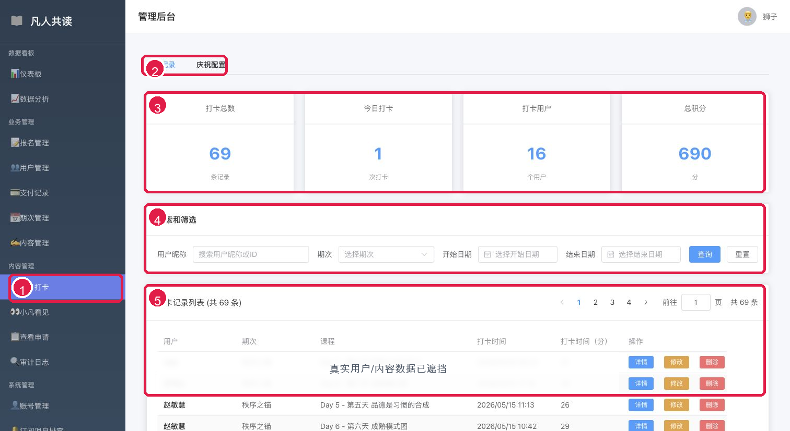
第一页：打卡记录查询与管理。
8.2 庆祝配置页
- 点击“庆祝配置”tab，进入动画配置页。
- 点击动画卡片可选中某个庆祝效果。
- 每个动画可以打开或关闭“随机启用”，也可以点击“预览”查看效果。
- 随机卡片表示每次随机展示一种已启用动画。
重点：庆祝配置会影响小程序端阅读完成后的反馈体验。建议保留多个已验证过的动画随机启用，让用户每次完成阅读都有新鲜感。
页面要点说明
- 每日打卡入口。
- 庆祝配置 tab。
- 动画特效卡片列表。
- 随机启用开关和预览按钮。
- 随机模式卡片。
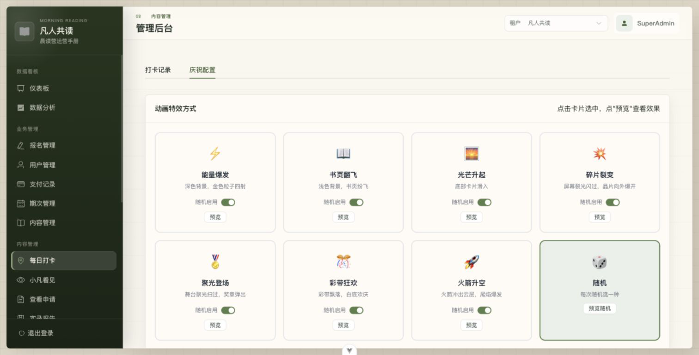
第二页：阅读完成庆祝动画配置。
9. 小凡看见
用途：小凡看见分两页看：第一页管理小凡看见列表，第二页进入“查看”后做内容查看、点赞和弹幕反馈。
9.1 小凡看见首页
- 进入小凡看见后，先选择期次筛选列表。
- 需要新增内容时，点击“新增小凡看见”。
- 列表里可以查看分页、内容摘要、被看见人、发布状态和创建时间。
- 单条内容右侧可执行查看、编辑、下架或删除。
重点：日常维护优先使用“查看”和“编辑”。临时隐藏内容用“下架”，不要直接删除。
页面要点说明
- 小凡看见入口。
- 期次筛选和新增按钮。
- 分页导航。
- 小凡看见列表。
- 查看、编辑、下架、删除操作。
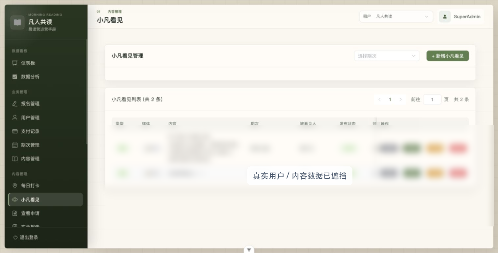
第一页：小凡看见列表管理。
9.2 查看后的内容与操作
- 在列表中点击“查看”，打开小凡看见详情弹窗。
- 查看正文、被看见人、当前阅读位置和右侧弹幕操作列表。
- 在“管理操作”里搜索用户昵称，选中后可点“点赞”。
- 输入弹幕内容后，点击“发送弹幕”，以选中用户身份发送反馈。
重点：点赞和弹幕不是普通查看功能，而是管理员可用于给优秀小凡看见做反馈和互动的后台能力。发送弹幕前必须确认选中的用户身份和弹幕内容。
页面要点说明
- 小凡看见入口。
- 查看弹窗：正文、被看见人和阅读位置。
- 右侧弹幕操作列表。
- 搜索用户后点赞。
- 输入弹幕并发送。
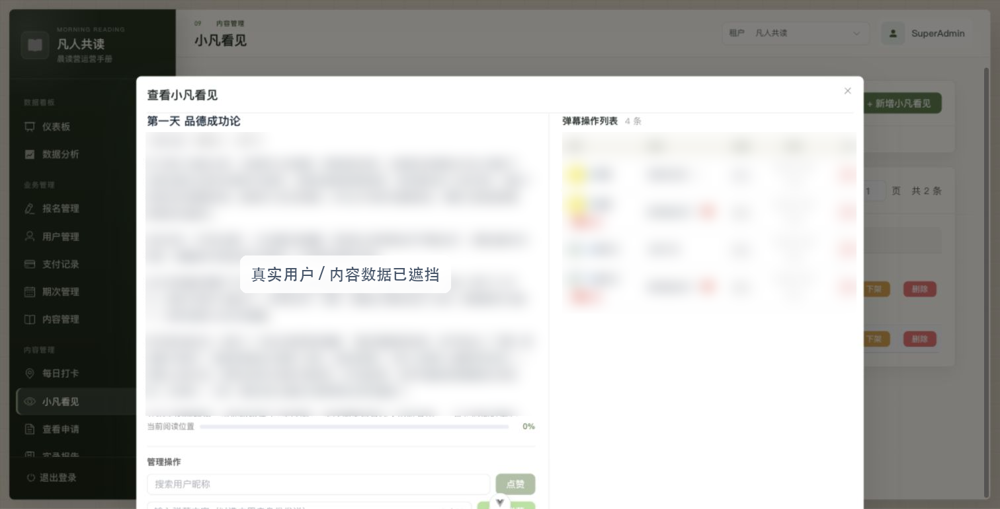
第二页：有内容时可进入查看详情；若当前租户暂无数据，截图展示该租户真实空态。
10. 查看申请
用途：用来处理用户申请被“小凡看见”的记录，包括筛选、单条处理、批量处理和导出。
操作流程
- 先看顶部统计：总申请数、待审批、已同意、已拒绝和平均响应时间。
- 按申请状态、申请者、被申请者筛选后点击“查询”。
- 勾选多条记录后可批量同意或批量拒绝。
- 单条记录可以同意、拒绝、查看详情或删除。需要留档时使用“导出数据”。
重点：批量同意/拒绝会影响用户展示权限，操作前必须确认勾选对象。
如果只是排查原因，先点详情，不要直接同意或拒绝。
页面要点说明
- 查看申请入口。
- 顶部申请统计。
- 筛选和查询区。
- 批量同意、批量拒绝、导出数据。
- 单条同意、拒绝、详情、删除。
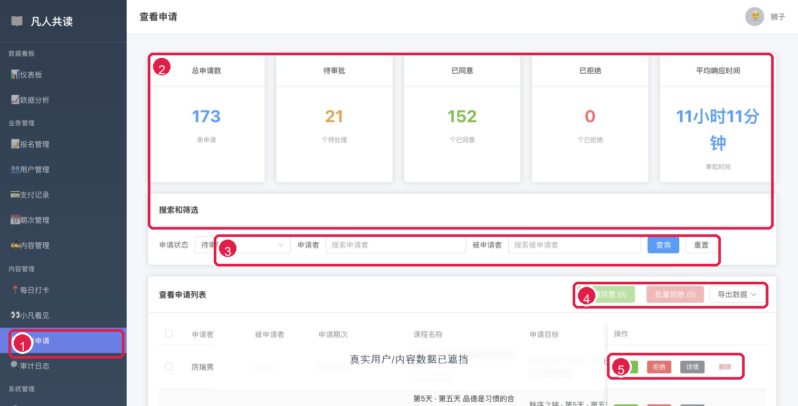
本节对应当前版本后台界面；部分真实数据已遮挡。
11. 实录报告
用途：用来给已报名成员上传、替换、预览和分享结营实录 PDF。
操作流程
- 先选择期次，也可以输入成员姓名、昵称或手机号搜索。
- 需要查缺补漏时，勾选“只看未上传”。
- 在成员行右侧点击“上传 PDF”或“替换 PDF”，上传对应报告。
- 上传后可点击“预览”核对文件内容，或点击“复制链接”分享给成员。
- 发现上传错文件时，先确认成员和期次，再点击“清空”。
重点：实录报告和成员报名记录绑定。上传、替换、清空前，必须同时核对成员、手机号、期次和文件名。
功能速查
- 期次筛选：缩小到某一期的成员报告。
- 关键词搜索：按姓名、昵称或手机号定位成员。
- 只看未上传：快速找出还缺报告的成员。
- 上传/替换 PDF：维护成员专属报告文件。
- 预览/复制链接：核对内容并发送给成员。
- 清空：移除当前成员报告，属于高风险操作。
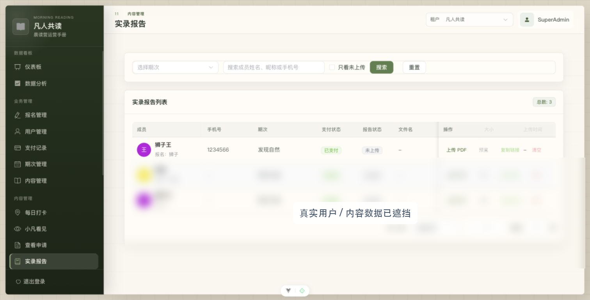
本节对应当前版本后台界面；成员、手机号和文件明细已遮挡。
12. 在场管理
用途：用来管理小程序里的“在场印记”，包括活动类型、印记内容、图片/视频、发布者、在场人数和共鸣数据。
操作流程
- 先在“活动类型管理”中维护类型 Emoji、标签名、Key 和排序。
- 用活动类型和关键词筛选印记，关键词可搜索标题或作者。
- 在列表中核对封面、标题、类型、发布者、在场人数、共鸣数、媒体数量和活动时间。
- 需要修正内容时点击“编辑”，在抽屉中维护图片/视频、标题、描述等信息。
- 删除印记或活动类型前，先确认是否会影响前台展示和历史内容归类。
重点：活动类型的排序会影响前台选择和展示体验；删除类型前要确认没有仍在使用的印记。
功能速查
- 新建/编辑活动类型：维护在场内容分类。
- 类型上移/下移：调整类型展示顺序。
- 标题/作者搜索：快速定位具体印记。
- 封面预览：区分图片和视频内容。
- 编辑印记：修正内容、媒体和活动信息。
- 删除印记：高风险操作，先核对对象。
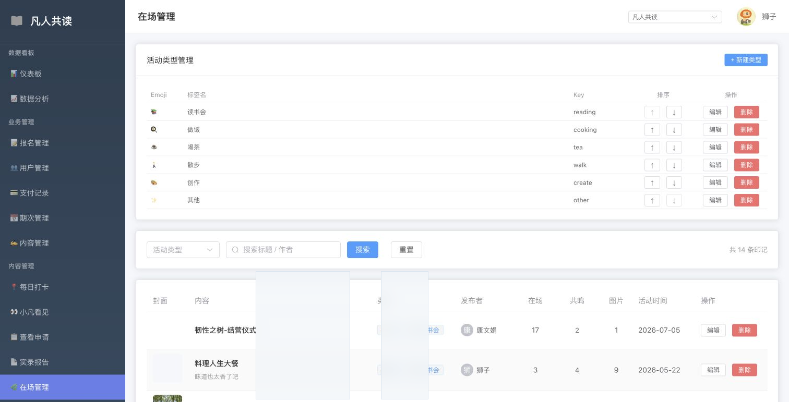
本节对应当前版本后台界面；部分真实内容和用户数据已遮挡。
13. 活动管理
用途：用来创建和维护近期活动，包括活动海报、时间、描述、腾讯会议、付费设置、报名表单和可见范围。
操作流程
- 进入活动管理后，先看活动列表的标题、类型、开始时间、状态、价格、可见范围和报名人数。
- 点击“创建活动”新增活动，或点击单条活动右侧“编辑”。
- 填写标题、类型、海报图、开始/结束时间、活动描述、腾讯会议号和邀请链接。
- 如为付费活动，开启“是否付费”并填写活动价格。
- 如需收集报名信息，开启报名表单，添加字段并预览表单。
- 按活动需要选择“全部用户”或“指定用户”可见范围。
- 活动上线后，可点击“查看报名”核对报名名单。
重点：活动发布前要重点核对时间、价格、会议链接、报名表单字段和可见范围。指定用户模式下，非名单用户看不到活动。
功能速查
- 创建/编辑活动：维护活动基础信息。
- 上传海报图：展示在小程序活动入口。
- 付费设置：免费或按金额收费。
- 报名表单：支持字段添加、排序、编辑、删除和预览。
- 可见范围：全部用户或指定用户。
- 查看报名：核对活动报名人数和名单。
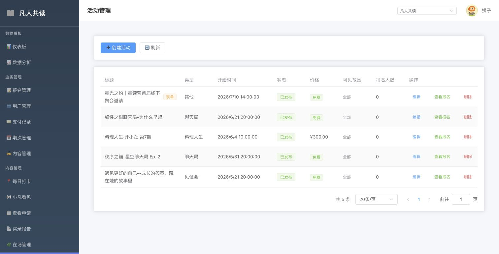
本节对应当前版本后台界面；若当前租户暂无活动，会展示该租户真实空态。
14. 优惠券管理
用途：用来给活动配置优惠券，支持固定减免、折扣、指定活动、指定用户或全平台通用。
操作流程
- 进入优惠券管理后，可按活动和状态筛选券列表。
- 点击“创建优惠券”，填写券名和适用活动；不选活动时适用全部付费活动。
- 选择折扣类型：固定减免或折扣，并填写对应金额或折扣值。
- 设置有效期，过期后优惠券不可继续使用。
- 选择发放范围：指定用户或全平台通用。
- 已有优惠券可编辑、复制或删除；复制适合快速生成同类型券。
重点：优惠券会直接影响付款金额。创建前要核对适用活动、折扣值、有效期和发放范围，避免把个人券误设为全平台通用。
功能速查
- 活动筛选：只看某个活动关联的券。
- 状态筛选：可用、已使用、已过期。
- 固定减免：直接减少指定金额。
- 折扣：按比例优惠，例如 80 表示 8 折。
- 指定用户：搜索昵称后发放给特定用户。
- 全平台通用：所有符合条件的用户可用。
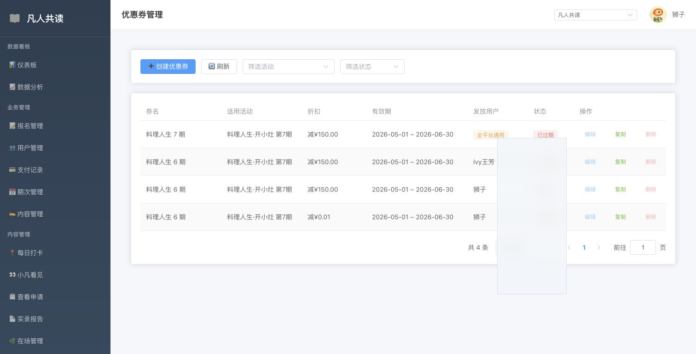
本节对应当前版本后台界面；优惠券明细和用户信息已按需遮挡。
15. 首页配置
用途：用来调整小程序首页板块顺序和显示状态，让运营能按活动节奏控制首页重点。
操作流程
- 进入首页配置后，查看当前首页板块顺序。
- 通过“上移”“下移”调整板块位置。
- 点击“隐藏”或“显示”控制某个板块是否出现在小程序首页。
- 需要恢复项目默认顺序时，点击“恢复默认”。
- 确认顺序和状态无误后点击“保存”。
重点：首页配置会影响用户第一屏看到的内容。活动期通常把“近期活动”前置，晨读期可把“今日任务”“我的打卡”“小凡看见”放在更靠前位置。
当前可配置板块
- 近期活动
- 今日任务
- 凡人生活
- 我的打卡
- 小凡看见
- 请求看见
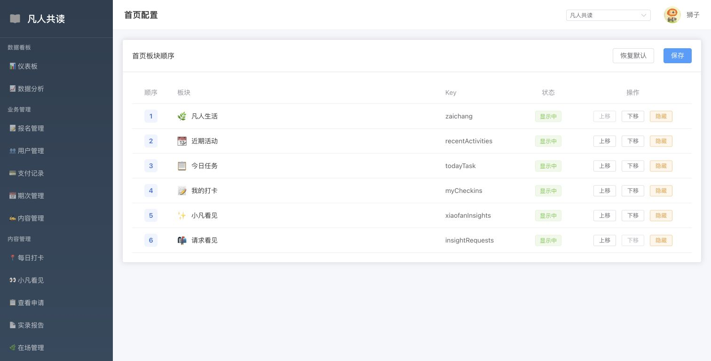
本节对应当前版本后台界面，展示首页板块顺序和显示状态。
16. 审计日志
用途：用来查询后台管理员操作记录，帮助追踪是谁在什么时间做了什么变更。
操作流程
- 进入审计日志后，先按时间范围、操作人、操作类型或关键词筛选。
- 查看列表中的操作时间、管理员、模块、动作和目标对象。
- 需要追踪异常时，先定位最近一次相关操作，再回到对应业务页面核对结果。
- 遇到删除、清空、批量处理、配置变更等问题，优先查看审计日志确认操作来源。
重点：审计日志用于追踪后台操作，不用于修改业务数据。发现异常后，要回到对应业务模块处理。
常见排查场景
- 报名或申请被批量处理后，确认操作者和时间。
- 活动、优惠券、首页配置变更后，确认最近变更记录。
- 内容、打卡、小凡看见被删除或下架后，核对操作来源。
- 多管理员协作时，用日志对齐责任和处理进度。
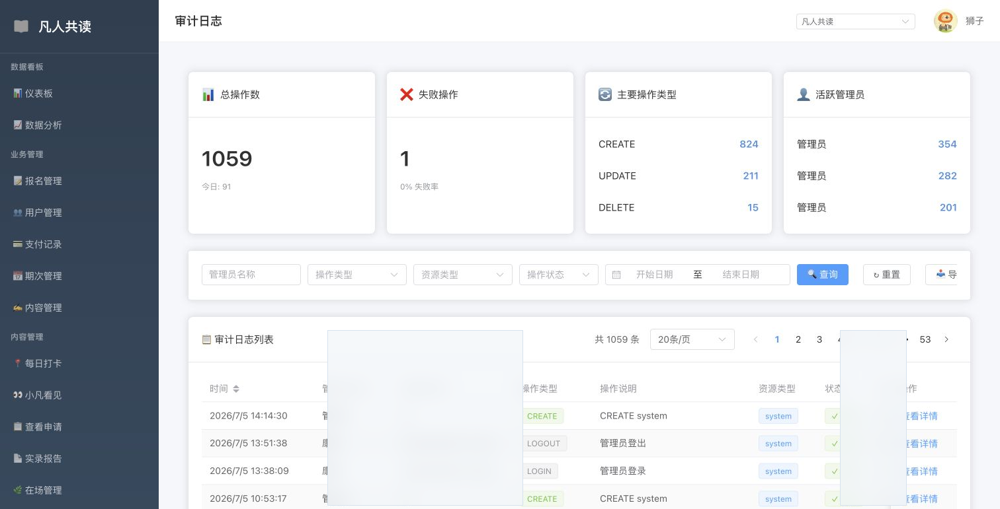
本节对应当前版本后台界面；管理员账号、IP 和操作明细已遮挡。